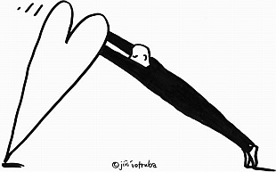
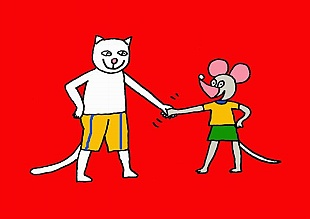
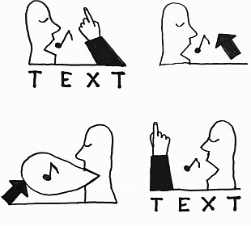

Zůstanou poškozené dokumenty, fotografie a účtenky. Hasiči, policie a pojišťovna mají každý jen část.
HLAVNÍ ZPRÁVA · SOUDNÍ DŮKAZ
Vrchní soud zrušil výrok o vině: rozsudek neumožňoval rozlišit legální a zakázané konopí.
Vrchní soud v Praze dne 29. 7. 2025 usnesením č. j. 11 To 88/2024-2990 zrušil výrok o vině, navazující tresty a zabrání věci z rozsudku Městského soudu v Praze ze dne 7. 5. 2024, č. j. 45 T 1/2024-2430, a podle § 259 odst. 1 trestního řádu věc vrátil Městskému soudu v Praze k novému projednání a rozhodnutí. Autor uvádí, že nové projednání je plánováno na říjen 2026; tento termín samotné usnesení neobsahuje. Pro společnou kontrolní otázku čtyř oddělených kauz má nový soudní důkaz relevanci 9/9 — EXTRÉM, HOŘÍ.

PROČ TO VZNIKLO
Když víte, co se stalo, ale zatím to nemůžete dokázat
V pátek odpoledne dorazí úřední dopis. Obsahuje čísla jednací, odkazy na dřívější řízení a možná i lhůtu. Nevíte, zda a kdy začala běžet. Člověk, který by vám mohl poradit, bude k dispozici až příští týden.
Co se stalo?Co ukazují důkazy?Co zůstává neznámé?Co musí člověk ověřit?
Právě zde začíná AI Advocate for the Poor: mezi „Vím, co se stalo“ a „Mohu to dokázat“. Nový dokument zařadí do příběhu, ukáže, co mění, a otevřeně řekne, co neví.
AI Advocate proměňuje nepřehledný archiv v kontrolovatelnou paměť, aby člověk nemusel být bohatý, zdravý ani právně vzdělaný, aby porozuměl vlastnímu příběhu.Tato paměť má patřit člověku.
Další situace, kdy může člověk ztratit celý příběh
Vzpomínky, dopisy a úřední záznamy jsou rozptýlené mezi příbuznými po celém světě.
Zprávy, posudky, fotografie a výpovědi se hromadí a některá tvrzení se v čase mění.
Chudoba zde neznamená jen nedostatek peněz. Tváří v tvář složitému systému může být kdokoli chudý na čas, zdraví, informace, odbornou pomoc nebo schopnost udržet celý příběh propojený.
Vyzkoušejte vlastní dokumentPDF s textovou vrstvou, TXT nebo vložený text · pouze ve vašem prohlížeči · vždy dostanete orientační výstupy a navržený další krok
Porovnat se sdílenou pamětí
0/9 — samostatný osobní archiv bez shody1/9 — nejslabší zelený průniksoukromé zpracování · sdílení řídí člověk
JAK TO POMŮŽE PRÁVĚ VÁM
Dokument zůstane váš. Systém z něj udělá srozumitelný další krok.
DŮKAZNÍ SERVIS
Čtyři vstupy do živé paměti
Ilustrace: Jiří Votruba Nový důkazCo změnil v síti čtyř kauz?Fakta, č. j., relevance a hranice závěru.
Nový důkazCo změnil v síti čtyř kauz?Fakta, č. j., relevance a hranice závěru.

Člověk v centruPaměť patří člověkuSdílení řídí uživatel, nikoli platforma.
Sdílené důkazyCizí závěr se nepřenášíPřenášet lze jen zdrojovaná fakta a důkazní kandidáty.
Váš dokumentZačněte vlastní listinouPDF a text zůstávají pouze ve vašem prohlížeči.Votrubovy kresby tvoří redakční a lidskou vrstvu webu. Nejsou pramenem k žádnému právnímu nebo skutkovému závěru.
SILNÁ VĚTA → TRESTNÍ SPIS → RELEVANCE OBNOVY → CO ZMĚNIL NOVÝ DOKUMENT
Živá mapa Mgr. Dušana Dvořáka — přesně označené a dosud otevřené větve
AKTUALIZACE 21. 7. 2026 · PŘED / PO VLOŽENÍ
Čtyři současné soudní větve
Pět přesně označených institucionálních větví
Otevřené skupiny — přesné značky budou doplněny z prvotních listin
Tři datovaná období testování a dalšího vývoje
OD DŮKAZNÍ PAMĚTI K PŘEZKOUMATELNÉMU PROCESNÍMU PODKLADU
Co systém vytvořil z konkrétních spisů, nových důkazů a společné otázky měření THC
Každý výstup uvádí soud, datum a č. j. nebo sp. zn., odděluje přesnou citaci od jejího významu a výslovně říká, co listina nedokládá. Sdílené důkazy se používají jen jako kandidáti ke kontrole konkrétního spisu; hotový závěr z jiné kauzy se nikdy nepřenáší.
Mgr. Dušan Dvořák — návrh na povolení obnovy řízení
Okresní soud v Prostějově · věci 2 T 104/2010; 2 T 65/2011 / 2 Nt 1257/2013; 2 Nt 1151/2014; 3 Nt 1151/2014.
Plné neanonymizované znění se zveřejňuje s výslovným souhlasem autora. Soubor je převzat beze změny; SHA-256 je uveden v manifestu. Otevřít přesně podaný návrh (PDF)Mgr. Dušan Dvořák — nové listiny po 12. 7. 2026
Samostatný dodatek propojuje pozdější úřední uzly a usnesení Vrchního soudu v Praze č. j. 11 To 88/2024-2990 s přesnými otázkami k historickým laboratorním podkladům.
Původní návrh nepřepisuje. Pozdější reakce ani jiné soudní rozhodnutí samy o sobě nejsou automatickým důvodem obnovy. Otevřít pracovní dodatek (PDF)L. CH. — Krajský soud v Brně
KS Brno 28. 2. 2019, č. j. 50 T 7/2018-603; VS Olomouc 6. 11. 2019, č. j. 5 To 39/2019-707.
Návrh z roku 2022 se porovnává s dnešní zdrojovanou pamětí. Před podáním chybí úplné rozsudky, laboratorní řetězec, aktuální procesní stav a souhlas oprávněné osoby. Otevřít pracovní návrh L. CH. (PDF)M. K. / J. K. — Krajský soud v Hradci Králové
KS Hradec Králové 27. 2. 2017, č. j. 9 T 5/2016-948; VS Praha 12. 6. 2017, č. j. 11 To 48/2017-1036; NS 13. 12. 2017, č. j. 11 Tdo 1499/2017-48; ÚS 9. 7. 2019, sp. zn. IV. ÚS 1140/18.
Chemická, výnosová, digitální a případná větev § 278 odst. 4 jsou oddělené. Veřejný zdroj z 23. 1. 2026 popisuje rozsudek ve věci soudce Ivana Elischera jako nepravomocný; podmínka proto není doložena. Otevřít pracovní návrh M. K. / J. K. (PDF)G. F. / J. K. — Okresní soud v Ostravě
Uváděná věc: usnesení ze dne 18. 6. 2025, č. j. 15 T 11/2025-122; související policejní věc KRPT-202999/TČ-2024-070774 a odborné vyjádření KRPT-2600-1/KT-2024.
Doložené podklady popisují podmíněné zastavení, nikoli odsouzení. Bez originálu usnesení, právní moci a výsledku po zkušební době by označení dokumentu jako návrhu na obnovu bylo zavádějící. Otevřít procesní memorandum (PDF)Procesní hranice: pouze první PDF je skutečně podané. Ostatní jsou veřejné pracovní podklady vytvořené po soutěžním podání; nejsou právní radou, nezaručují úspěch a před jakýmkoli použitím vyžadují kontrolu úplného spisu, souhlas dotčených osob a kvalifikovaného právníka. Usnesení 11 To 88/2024-2990 je srovnávací pramen, nikoli automatické zproštění ani samočinný důvod obnovy.
NEJDŘÍVE VÝSLEDEK · POTOM DŮKAZY
VSTUPNÍ DATA PŘÍPADU
Co už paměť drží v jednom okně
VERZE A DŮKAZNÍ KONTINUITA
V0 jsou data, V1 soutěžní snímek, V2 živá paměť a V3 její srozumitelné veřejné okno
V0 není starý web. Je to datová a důkazní vrstva od 20. 4. 2026, vzniklá před znalostí soutěže a před návrhem dnešní podoby systému.
DEVÍTISTUPŇOVÝ SEMAFOR
Barva znamená relevanci, vztahy a potřebu reagovat
U této kauzy znamená nejvyšší červená extrémně důležité vztahy a potřebu reakce. Lhůta se zobrazí jen tehdy, když ji určí listina nebo ověřené pravidlo; samotná barva ji nevytváří. U jiného uživatele se stupně vztahují k jeho vlastní kauze.
DENNÍ HISTORIE V2–V3
Co přibylo po podání přihlášky
DATOVANÁ PAMĚŤ TESTŮ
Kolik různých kontrol patří do každého soutěžního období
JEDNA VĚTA → SEMAFOR → DALŠÍ KROK → ROZBALIT DŮKAZY
Co přímo uvádějí úřední listiny
Co tvrdí pozdější podání — nikoli úřední zjištění
Právní kontrolní rámec a ochrana soukromí
M. K. / J. K. — úplné posouzení a prameny
Případ M. K. a J. K.: společný nový důkaz 9/9 — EXTRÉM, HOŘÍ
L. CH. — úplné posouzení, prameny a chybějící důkazy
Návrh na obnovu L. CH. z roku 2022: 9/9 relevance k novým důkazům o metodice THC
Organizační paměť aliance — rejstřík, výroční zpráva a exekuční větve
Výroční zpráva 2025 a čtyři doložené ukončené exekuční větve aliance
V2.2 · Výroční zpráva 2025, první tři zastavené exekuční větve a rozsudek OS Prostějov
Stav před doplněním v2.3: pět jedinečných neveřejných PDF doložilo rejstříkový kontext, tři zastavené exekuce a jeden přesně omezený soudní závěr. Výroční zpráva byla vedena jako schválená 14. 7. 2026 a čekající na grafické úpravy.
Liberecká větev tehdy uváděla přibližně 200 000 Kč jako orientační údaj autora, protože samotné usnesení o zastavení obsahovalo jen jistinu 83 020,64 Kč s příslušenstvím. V2.3 tuto nejistotu zpřesnila novou listinou na 192 752,91 Kč k 8. 7. 2025, nikoli ke dni zastavení.
V2.1 · Po více než patnácti letech vymáhání odpovědi policejní listina ze dne 20. 7. 2026 věcnou odpověď opět nepřinesla
1 · PŘÍMÝ VÝROK LISTINY
Policie uvádí, že podání adresované NSZ bylo:
„bez přijetí dalšího opatření uloženo“
2 · AUTOREM POTVRZENÁ CHRONOLOGIE
Mgr. Dušan Dvořák potvrzuje, že předžalobní výzvu dne 14. 7. 2026 po podání NSZ rozeslal také Policii ČR jako důkaz důvodnosti preventivního podání z 12. 7., Okresnímu soudu a Okresnímu státnímu zastupitelství v Prostějově, KPR, Ministerstvu spravedlnosti a do souvisejících zásahových žalob.
3 · ZÁVĚR SYSTÉMU
Listina přidává nový procesní uzel, ale neodůvodňuje nečinnost, nerozhoduje o důvodnosti podání a neuzavírá žádnou z dotčených větví.
Devět červených vazeb — kam se význam listiny okamžitě promítá
Důkazní hranice: přesná citace policie, autorem potvrzená chronologie a systémový závěr jsou záměrně oddělené. Červená znamená naléhavost lidské kontroly a počet dotčených vazeb; sama neprokazuje nezákonnost ani výsledek řízení.
Otevřít laboratoř, původní demonstrační testy a podrobnou mapu případu
POSLÁNÍ PROJEKTU
Od tisíců neuspořádaných prvků k ověřitelnému případu
Chudý nebo zdravotně postižený člověk může mít oprávněný nárok a dostatek důkazů, ale přesto selhat, protože nemá peníze, zdraví, čas nebo odbornou kapacitu svůj případ uspořádat.
AI Advocate má tuto nevýhodu kompenzovat. Pomáhá proměnit nepřehledný životní a právní problém ve strukturu osob, institucí, řízení, událostí, tvrzení a důkazů. V požadované větvi potom dohledá relevantní podklady a připraví návrh dalšího kroku ke kontrole člověkem.
roztříštěné podklady→ověřitelná struktura→relevantní větev→návrh jednání
Nejde o nahrazení advokáta. Jde o to umožnit člověku dostat se do stavu, kdy mu advokát, poradna, ombudsman nebo úřad mohou skutečně pomoci.
KONKRÉTNÍ APLIKACE DNES V ČESKÉ REPUBLICE U CCA 30–50 TISÍC OBČANŮ
Evropský případ od roku 2004 jako síť institucí, řízení a nápravných cest
Rozsah 30–50 tisíc občanů je orientační odhad autora; nejde o výsledek oficiální statistiky ani o počet osob evidovaných platformou.
Prototyp zobrazuje anonymizovanou vazbu výzkumného programu na prezidenta republiky, české soudy a státní zastupitelství, ministerstva, policii a forenzní orgány, SDEU, Evropskou komisi a ESLP. Odděluje indexované údaje od tvrzení autora, která ještě vyžadují připojení anonymizovaného prvotního pramene.
Soukromí v této ukázce: vybrané soubory se zpracují pouze lokálně ve vašem prohlížeči. Nikam se neodesílají a po obnovení stránky zmizí.
POTENCIÁL V BĚŽNÉM ŽIVOTĚ
Člověk přinese krabici listin — systém mu vrátí srozumitelnou cestu
Rodina vězněného člověka, člověk se zdravotním postižením, senior, dlužník nebo rodič ve sporu s úřadem často neprohraje proto, že nemá žádný důkaz, ale protože jej nedokáže včas najít, spojit s řízením a vysvětlit odborníkovi.
dokumenty nebo hlas ve vlastním jazyce→bezpečná anonymizace→časová osa a důkazní semafor→kontrola advokátem či poradnou
Výsledek: u přesně podporované listiny zkontrolovaný výstup; u každého jiného čitelného dokumentu rozpoznaná data, spisové značky, instituce, částky, možné lhůtové výrazy, průnik s veřejnou pamětí a navržený další krok. Hlasový vstup, OCR, automatická anonymizace a univerzální právní analýza jsou stále produktová vize.
OVĚŘITELNÁ PAMĚŤ
Výroky, instituce, vazby a judikatura
Ověřený výrok je oddělen od neověřeného uzlu a obecného judikatorního principu. Autor kazuistiky je uveden se svým souhlasem; kontaktní údaje a nerelevantní soukromé osoby zveřejněny nejsou.
Ověřené výroky ze zdrojové listiny
Známé vazby čekající na zdroj
Relevantní judikatorní principy
ŽIVÁ PAMĚŤ JEDNOHO ČLOVĚKA
CannaInsider.eu — 1994 · 2004 · 2008 · 2010 · 2026
Z archivu k auditovatelnému pavouku rozhodnutí.
Tři veřejně kontrolovatelné důkazní osy
Rozsah doložené mapy
Aktivní soudní větve v roce 2026
Strom podání a postoupení od 20. dubna 2026
Chronologie a vazby
Kandidátní rozpory k ověření
ŘÍZENÝ TEST PŘED PODÁNÍM PŘIHLÁŠKY
Archiv občana XY už existuje. Přidává se jedna nová listina.
archiv 2004–2026→sdělení KSZ Ostrava→kontrola lhůt a významu→aktualizovaný pavouk
Toto tlačítko spouští první interní test. Samostatný vnější test podporovaného PDF a bezpečné mapování textu jsou níže.
VÝSLEDEK INTERNÍHO TESTU
Co listina dokládá
Co listina nedokládá
Semafor relevance
Dopad na tři dosud nepodané dokumenty z 18. července 2026
Druhá vrstva: ministři, nejvyšší státní zástupkyně a další orgány
Otázky k ověření člověkem
SKUTEČNÝ PRAKTICKÝ VÝSTUP
Dokumenty odeslané 19. července 2026
Vznikly v projektu AI Advocate for the Poor ve spolupráci Mgr. Dušana Dvořáka a Codexu. Na žádost autora jsou zveřejněny v odeslané podobě včetně jeho identifikačních údajů. Analytická vrstva uvádí u dalších osob jen veřejné funkce; přiložená PDF zachovávají podobu skutečně odeslaných dokumentů.
PŘED TESTEM
Návrhy z 18. července 2026
Nové sdělení KSZ Ostrava ještě nebylo bezpečně promítnuto do všech tří dokumentů a některé věty zaměňovaly připravené podání za již podané nebo doložené.
PO TESTU
Odeslané výstupy z 19. července 2026
Systém vytvořil nový procesní uzel, určil rozdílnou relevanci pro každé řízení, omezil význam postoupení a opravil stav dokumentů. Níže jsou tři výsledky v odeslané podobě.
DRUHÝ TEST A NÁSLEDNÝ TEST — VNĚJŠÍ VSTUP
Bezpečná zkouška libovolného dokumentu — soubor zůstává ve vašem počítači
Následná testovací verze v3.2 · 21. července 2026: po řádném odeslání soutěžní přihlášky byla přidána podpora pro přesné rozpoznání podkladů dalších pěti osob, dvou přesných listin k pražské soudní větvi a pěti dnešních PDF autora. Poslední sada představuje tři již známé události — jednu přesnou duplicitu a dvě události nově doložené prvotními PDF — a dva nové úřední uzly. Původní soutěžní sestavení zůstává zachováno v datovaném archivu. Toto testování i navazující tematický český pilot jsou výslovně označeny jako vývoj uskutečněný po odeslání soutěžního návrhu.
Soubory se zpracují pouze lokálně v prohlížeči a nikam se neodesílají. Přesně podporované PDF dostane ověřený zdrojově omezený výstup. Každý jiný čitelný dokument dostane obecnou orientaci: rozpoznaná data, spisové značky, instituce, částky, možné lhůtové výrazy, porovnání s veřejnou a sdílenou konopnou pamětí a navržený další krok. Slabý průnik je 1/9 zelený; nulový průnik je černý bod 0/9. U člověka s právním střetem ve věci konopí systém převezme jeho citovaná fakta a důkazní kandidáty do odděleného pracovního podkladu pro zvolenou či textem naznačenou cestu; nepřevezme osobní procesní stav ani hotový závěr jiné kauzy a neslibuje úspěch. Obrazový sken bez textové vrstvy přizná potřebu OCR.
Otevřít anonymizovaný důkazní výtah PDF Otevřít veřejnou odvozenou kopii policejního sděleníOBECNÁ MÍSTNÍ ORIENTACE — VNĚJŠÍ VSTUP
Co dokument obsahuje a zda se protíná s veřejnou nebo sdílenou konopnou důkazní pamětí
PRIORITNÍ POŘADNÍK ROZPOZNANÝCH LISTIN
Nejvyšší stupeň a počet červených vazeb rozhodují o pořadí
VÝSLEDEK PŘESNĚ PODPOROVANÉHO PDF